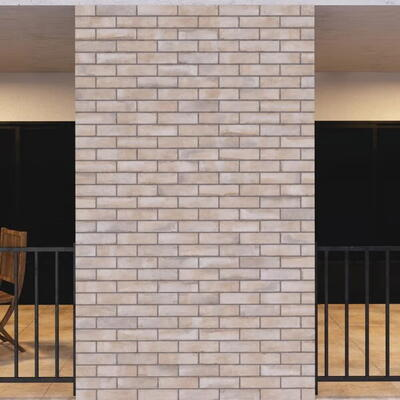

Revestimento externo esmaltado yorkshire light borda flat cinza 7x26cm
Preço: R$109,90/m²
Descrição detalhada
| Ambiente indicado | Áreas internas e externas |
|---|---|
| Tonalidade | Cinza |
| Intensidade do brilho | Fosco |
| Local indicado para colocação | Fachadas e paredes |
| Tipo de textura | Com relevos |
| Largura | 26,00 cm |
| Altura | 7,00 cm |
| Espessura | 6,50 mm |
| Obrigatoriedade de impermeabilização | Não |
| Obrigatoriedade de rejuntamento | Sim |
| Resistência a mancha | Alta |
| Resistência ao risco | Alta |
| Espaçamento entre as peças | 3 mm |